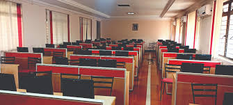

Amal Jyothi College of Engineering offers a wide range of undergraduate, postgraduate, and doctoral programs
including B.Tech, M.Tech, MCA, BCA and PhD in various engineering disciplines such as Computer Science, Electronics,
Electrical, Mechanical, Civil, and Artificial Intelligence. The curriculum is aligned with industry trends and
university standards, helping students gain practical and theoretical knowledge.
The college has highly qualified faculty members with strong academic backgrounds and industry exposure.
Students receive mentoring, academic guidance, and career support. Infrastructure includes modern classrooms,
well-equipped laboratories, a digital library, hostels, sports complexes, innovation centers, and high-speed Wi-Fi.
Student services such as placement training, counselling, technical clubs, cultural activities, and entrepreneurship
cells make the campus life vibrant. Amal Jyothi’s strong industry linkages and international collaborations are its
unique selling propositions.

